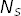
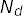
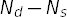
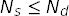
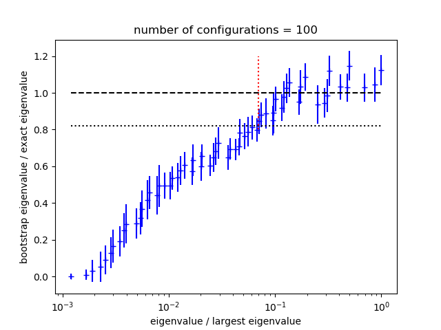
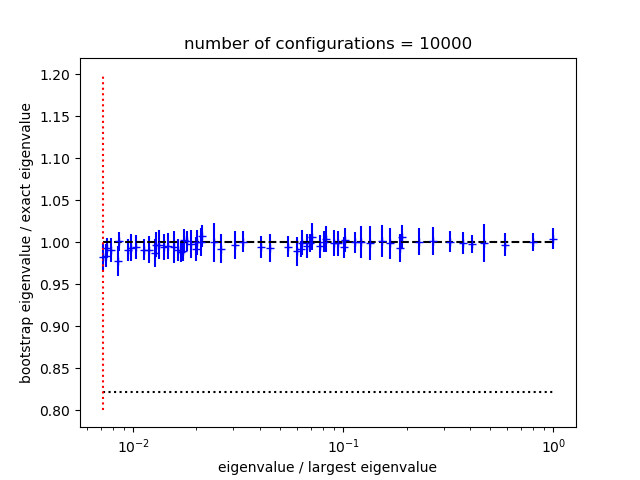

Faster, More Accurate Fits¶
Priming Fits¶
Good fits often require fit functions with several exponentials and many parameters. Such fits can be costly. One strategy that can speed things up is to use fits with fewer terms to generate estimates for the most important parameters. These estimates are then used as starting values for the full fit. The smaller fit is usually faster, because it has fewer parameters, but the fit is not adequate (because there are too few parameters). Fitting the full fit function is usually faster given reasonable starting estimates, from the smaller fit, for the most important parameters. Continuing with the example from the previous section, the code
data = make_data('mcfile')
fitter = cf.CorrFitter(models=make_models())
p0 = None
for N in [1,2,3,4,5,6,7,8]:
prior = make_prior(N)
fit = fitter.lsqfit(data=data, prior=prior, p0=p0)
print_results(fit, prior, data)
p0 = fit.pmean
does fits using fit functions with N=1...8 terms. Parameter mean-values
fit.pmean from the fit with N exponentials are used as starting values
p0 for the fit with N+1 exponentials, hopefully reducing the time
required to find the best fit for N+1.
Postive Parameters¶
Priors used in corrfitter.CorrFitter assign an a priori Gaussian/normal distribution
to each parameter. It is possible instead to assign a log-normal distribution,
which forces the corresponding parameter to be positive. Consider, for
example, energy parameters labeled by 'dE' in the definition of a model
(e.g., Corr2(dE='dE',...)). To assign log-normal distributions to these
parameters, include their logarithms in the prior and label the logarithms
with 'log(dE)': for
example, in make_prior(N) use
prior['log(dE)'] = gv.log(gv.gvar(N * ['0.25(25)']))
instead of prior['dE'] = gv.gvar(N * ['0.25(25)']). The
fitter then uses the logarithms as the fit parameters. The original 'dE'
parameters are recovered (automatically) inside the fit function from
exponentials of the 'log(dE)' fit parameters.
Using log-normal distributions where possible can significantly improve the
stability of a fit. This is because otherwise the fit function typically has
many symmetries that lead to large numbers of equivalent but different best
fits. For example, the fit functions Gaa(t,N) and Gab(t,N) above are
unchanged by exchanging a[i], b[i] and E[i] with a[j],
b[j] and E[j] for any i and j. We can remove this degeneracy
by using a log-normal distribution for the dE[i]s since this guarantees
that all dE[i]s are positive, and therefore that E[0],E[1],E[2]...
are ordered (in decreasing order of importance to the fit at large t).
Another symmetry of Gaa and Gab, which leaves both fit functions
unchanged, is replacing a[i],b[i] by -a[i],-b[i]. Yet another is to
add a new term to the fit functions with a[k],b[k],dE[k] where a[k]=0
and the other two have arbitrary values. Both of these symmetries can be
removed by using a log-normal distribution for the a[i] priors, thereby
forcing all a[i]>0.
The log-normal distributions for the a[i] and dE[i] are introduced
into the code example above by changing the corresponding labels in
make_prior(N), and taking logarithms of the corresponding prior values:
import gvar as gv
import corrfitter as cf
def make_models(): # same as before
models = [
cf.Corr2(datatag='Gaa', tmin=2, tmax=63, a='a', b='a', dE='dE'),
cf.Corr2(datatag='Gab', tmin=2, tmax=63, a='a', b='b', dE='dE'),
]
return models
def make_prior(N):
prior = gv.BufferDict()
prior['log(a)'] = gv.log(gv.gvar(N * ['0.1(5)']))
prior['b'] = gv.gvar(N * ['1(5)'])
prior['log(dE)'] = gv.log(gv.gvar(N * ['0.25(25)']))
return prior
This replaces the original fit parameters, a[i] and dE[i], by new fit
parameters, log(a)[i] and log(dE)[i]. The a priori distributions for
the logarithms are Gaussian/normal, with priors of log(0.1±0.5) and
log(0.25±0.25) for the log(a)s and log(dE)s respectively.
Note that the labels are unchanged here in make_models(). It is
unnecessary to change labels in the models; corrfitter.CorrFitter will automatically
connect the modified terms in the prior with the appropriate terms in the
models. This allows one to switch back and forth between log-normal and normal
distributions without changing the models (or any other code) — only the
names in the prior need be changed. corrfitter.CorrFitter also supports “sqrt-normal”
distributions, and other distributions, as discussed in the lsqfit
documentation.
Finally note that another option for stabilizings fits involving many
sources and sinks is to generate priors for the
fit amplitudes and energies using corrfitter.EigenBasis.
Marginalization¶
Often we care only about parameters in the leading term of the fit function, or just a few of the leading terms. The non-leading terms are needed for a good fit, but we are uninterested in the values of their parameters. In such cases the non-leading terms can be absorbed into the fit data, leaving behind only the leading terms to be fit (to the modified fit data) — non-leading parameters are, in effect, integrated out of the analysis, or marginalized. The errors in the modified data are adjusted to account for uncertainties in the marginalized terms, as specified by their priors. The resulting fit function has many fewer parameters, and so the fit can be much faster.
Continuing with the example in Priming Fits, imagine that Nmax=8
terms are needed to get a good fit, but we only care about parameter values
for the first couple of terms. The code from that section can be modified to
fit only the leading N terms where N<Nmax, while incorporating
(marginalizing) the remaining, non-leading terms as corrections to the data:
Nmax = 8
data = make_data('mcfile')
models = make_models()
fitter = cf.CorrFitter(models=make_models())
prior = make_prior(Nmax) # build priors for Nmax terms
p0 = None
for N in [1,2,3]: # fit N terms
fit = fitter.lsqfit(data=data, prior=prior, p0=p0, nterm=N)
print_results(fit, prior, data)
p0 = fit.pmean
Here the nterm parameter in fitter.lsqfit specifies how many terms are
used in the fit functions. The prior specifies Nmax terms in all, but only
parameters in nterm=N terms are varied in the fit. The remaining terms
specified by the prior are automatically incorporated into the fit data by
corrfitter.CorrFitter.
Remarkably this method is usually as accurate with N=1 or 2 as a full
Nmax-term fit with the original fit data; but it is much faster. If this
is not the case, check for singular priors, where the mean is much smaller
than the standard deviation. These can lead to singularities in the covariance
matrix for the corrected fit data. Such priors are easily fixed: for example,
use gvar.gvar('0.1(1.0)') rather than gvar.gvar('0(1)').
In some situations an SVD cut (see below) can also
help.
Chained Fits¶
Large complicated fits, where lots of models and data are fit simultaneously,
can take a very long time. This is especially true if there are strong
correlations in the data. Such correlations can also cause problems from
numerical roundoff errors when the inverse of the data’s covariance matrix is
computed for the  function, requiring large SVD cuts which can
degrade precision (see below). An alternative approach is to use chained
fits. In a chained fit, each model is fit by itself in sequence, but with the
best-fit parameters from each fit serving as priors for fit parameters in the
next fit. All parameters from one fit become fit parameters in the next,
including those parameters that are not explicitly needed by the next fit
(since they may be correlated with the input data for the next fit or with its
priors). Statistical correlations between data/priors from different models
are preserved throughout (approximately).
function, requiring large SVD cuts which can
degrade precision (see below). An alternative approach is to use chained
fits. In a chained fit, each model is fit by itself in sequence, but with the
best-fit parameters from each fit serving as priors for fit parameters in the
next fit. All parameters from one fit become fit parameters in the next,
including those parameters that are not explicitly needed by the next fit
(since they may be correlated with the input data for the next fit or with its
priors). Statistical correlations between data/priors from different models
are preserved throughout (approximately).
The results from a chained fit are identical to a standard simultaneous fit in the limit of large statistics (that is, in the Gaussian limit), but a chained fit usually involves fitting only a single correlator at a time. Single-correlator fits are typically much faster than simultaneous multi-correlator fits, and roundoff errors (and therefore SVD cuts) are much less of a problem.
Converting to chained fits is trivial: simply replace fit = fitter.lsqfit(...)
by fit = fitter.chained_lsqfit(...). The output from this function
comes from the last fit in the chain, whose fit results represent the
cummulative results of the entire chain of fits.
Results from the different links in
the chain — that is, from the fits for individual models — are
displayed using print(fit.formatall()).
There are various ways of chaining fits. For example, setting
models = [m1, m2, (m3a, m3b), m4]
causes models m1, m2 and m4 to be fit separately, but fits models
m3a and m3b together in a single simultaneous fit:
m1 -> m2 -> (simultaneous fit of m3a, m3b) -> m4
Simultaneous fits make sense when there is lots of overlap between the parameters for the different models.
Another option is
models = [m1, m2, [m3a,m3b], m4]
in fitter.chained_lsqfit which causes
the following chain of fits:
m1 -> m2 -> (parallel fit of m3a, m3b) -> m4
Here the output from m1 is used in the prior for fit m2, and the
output from m2 is used as the prior for a parallel fit of m3a
and m3b together — that is, m3a and m3b are not chained,
but rather are fit in parallel with each using a prior from fit m2. The
result of the parallel fit of [m3a,m3b] is used as the prior for m4.
Parallel fits make sense when there is little overlap between the parameters
used by the different fits.
Faster Fitters¶
When fits take many iterations to converge (or converge to an obviously wrong
result), it is worthwhile trying a
different fitter. The lsqfit module, which is used by
corrfitter for fitting, offers a variety of alternative
fitting algorithms that can sometimes be much faster (2 or 3 times
faster). These are deployed by adding extra directives for lsqfit
when constructing the fitter or when doing the fit: for example,
import corrfitter as cf
fitter = cf.CorrFitter(
models=make_models(),
fitter='gsl_multifit', alg='subspace2D', solver='cholesky'
)
uses the subspace2D algorithm for subsequent fits with fitter. It
is also possible to reset the default algorithms for all fits:
import lsqfit
lsqfit.nonlinear_fit.set(
fitter='gsl_multifit', alg='subspace2D', solver='cholesky'
)
The documentation for lsqfit describes many more options.
Processed Datasets¶
When fitting very large data sets, it is usually worthwhile to pare the data down to the smallest subset that is needed for the fit. Ideally this is done before the Monte Carlo data are averaged, to keep the size of the covariance matrix down. One way to do this is to process the Monte Carlo data with the models, just before averaging it, by using
import gvar as gv
import corrfitter as cf
def make_pdata(filename, models):
dset = cf.read_dataset(filename)
return cf.process_dataset(dset, models)
in place of make_data(filename). Here models is the list
of models used by the fitter (fitter.models). Function make_pdata
returns processed data which is passed to fitter.lsqfit using
the pdata keyword:
import corrfitter as cf
def main():
N = 4
models = make_models()
pdata = make_pdata('mcfile', models)
prior = make_prior(N)
fitter = cf.CorrFitter(models=models)
fit = fitter.lsqfit(pdata=pdata, prior=prior)
print(fit)
print_results(fit, prior, pdata)
...
if __name__ == '__main__':
main()
Processed data can only be used with the models that created it, so parameters in those models should not be changed after the data is processed.
Accurate Fits — SVD Cuts¶
A key feature of corrfitter is its ability to fit multiple correlators
simultaneously, taking account of the statistical correlations between
correlators at different times and between
different correlators. Information about the correlations typically comes from
Monte Carlo samples of the correlators. Problems arise, however, when the
number  of samples is not much larger than
the number  of data points being fit. Specifically the smallest
eigenvalues of the correlation matrix can be substantially underestimated if
is not sufficiently large (10 or 100 times larger than ).
Indeed there must be  zero eigenvalues
when . The underestimated
(or zero) eigenvalues lead to incorrect and large (or infinite) contributions
to the fit’s function, invalidating the fit results.
These problems tend show up as an unexpectedly large s,
for example, in fits where the per degree of freedom remains
substantially larger than one no matter how many fit terms are
employed. Such situations are usually improved by introducing an
SVD cut:
fit = fitter.lsqfit(data=data, prior=prior, p0=p0, svdcut=1e-2)
This replaces the smallest eigenvalues of the correlation matrix as needed
so that no eigenvalue is smaller than svdcut times the largest eigenvalue.
Introducing an SVD cut increases the effective errors and so is a
conservative move.
The method gvar.dataset.svd_diagnoisis() in module gvar is
useful for assessing whether an SVD cut is needed, and for setting
its value. One way to use it is in the make_pdata
routine when creating processed data (see Processed Datasets):
import gvar as gv
import corrfitter as cf
GENERATE_SVD = True
def make_pdata(filename, models):
dset = cf.read_dataset(filename)
pdata = cf.process_dataset(dset, models)
if GENERATE_SVD:
s = gv.dataset.svd_diagnosis(dset, models=models)
print('suggested svdcut =', s.svdcut)
s.plot_ratio(show=True)
svdcut = s.svdcut
else:
svdcut = 0.1
return gv.svd(pdata, svdcut=svdcut)
Here gv.dataset.svd_diagnosis(dset, models) uses a bootstrap
simulation (see Bootstrap Analyses) to test the reliability
of the eigenvalues determined from the
Monte Carlo data in dset. It places the SVD cut at the point
where the bootstrapped eigenvalues fall well below the actual values.
A plot showing the ratio of bootstrapped to actual eigenvalues is
displayed by s.plot_ratio(show=True). The following are
sample plots from two
otherwise identical simulations of 3 correlators (66 data points in all),
one with 100 configurations and the
other with 10,000 configurations:
|  |  |
With only 100 configurations, three quarters of the eigenvalues are too
small in the bootstrap simulation, and therefore also
likely too small for the real data. Simulated and actual eigenvalues come into
agreement around 0.1 (red dashed line),
which is the suggested value for svdcut. With 10,000 configurations,
all of the eigenvalues are robust and no SVD cut is needed. Both data
sets produce good fits (using the appropriate svdcut for each). The
fits agree with each other, with uncertainties from the high-statistics
case that are 10 times smaller, as expected.
In make_pdata() above, the SVD cut is applied directly to the
data (gv.svd(pdata, svdcut=svdcut)) before it is fit,
and so need not be supplied to the fitter. This is convenient when
using processed data because both the Monte Carlo data (dset) and
the corrfitter models are available.
Another option is to do the SVD diagnosis just before fitting and pass the
value of svdcut to corrfitter.